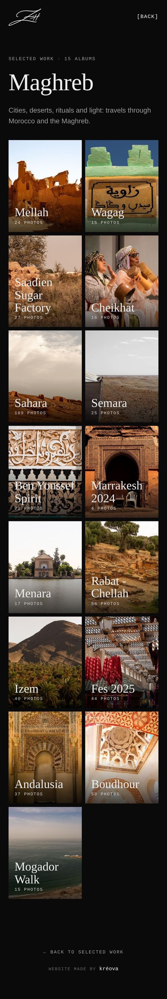
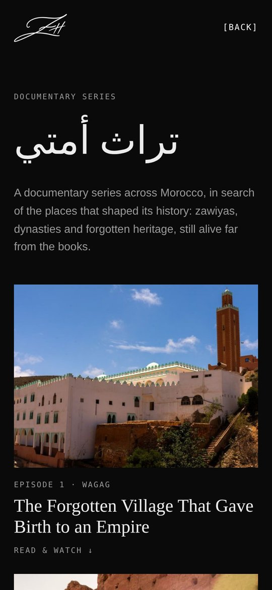

Website · Portfolio photographe
Zakaria Habbad — Portfolio
Le site portfolio du photographe et vidéaste Zakaria Habbad : un écrin sombre qui laisse toute la place aux images, du Maroc aux portraits en bord de mer.
Vidéo plein écran à l’ouverture, projets qui s’empilent au défilement comme des tirages posés les uns sur les autres, albums par série et une série documentaire, Turath Ummati, racontée en images et en vidéo.


- 01
Vidéo d’ouverture
Un showreel plein écran dès l’arrivée sur le site.
- 02
Projets empilés
Chaque série glisse sur la précédente au défilement.
- 03
Albums
Maghreb, portraits, intérieurs, produits : une galerie par série.
- 04
Récit documentaire
Turath Ummati, des épisodes à lire et à regarder.